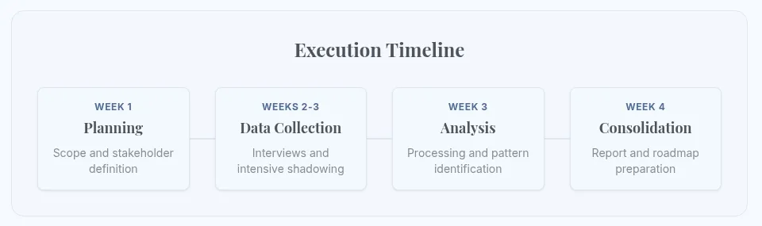
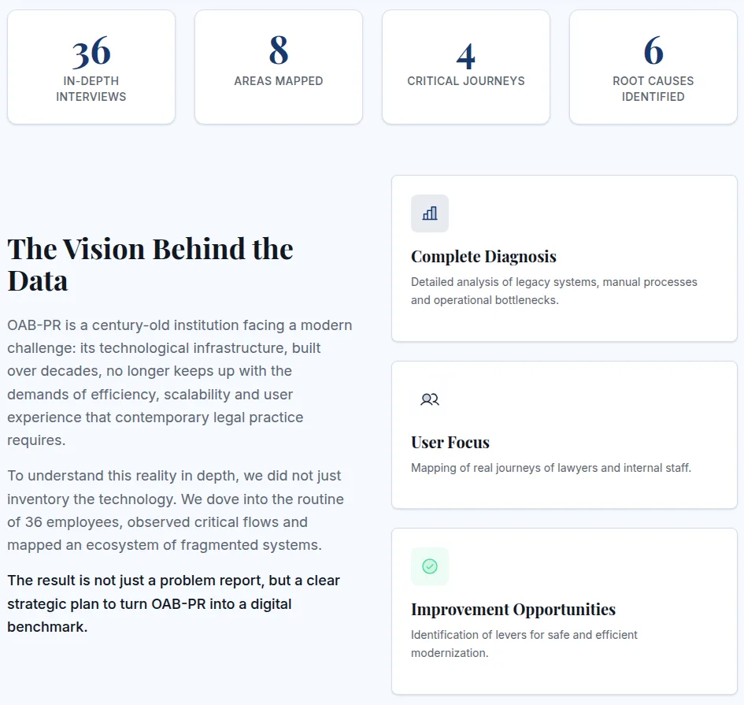

OAB Paraná
A four-week discovery to map how lawyers and staff really use the systems of a century-old institution, and turn it into a modernization roadmap.

Challenge
OAB-PR's technology, built over decades, no longer keeps up with the efficiency, scale and experience that contemporary legal practice demands.
The goal was not to inventory software but to understand the routine behind it: who depends on which system, where the work breaks, and why.
Process
Four structured weeks: immersion in documents and strategy, 36 interviews with operational shadowing, mapping of journeys and systems, and the definition of improvement opportunities.

The result was a complete diagnosis of legacy systems, manual processes and bottlenecks, side by side with the real journeys of lawyers and internal staff.
Results
Not just a report of problems: a strategic plan to make OAB-PR a digital benchmark for legal practice in Paraná.
